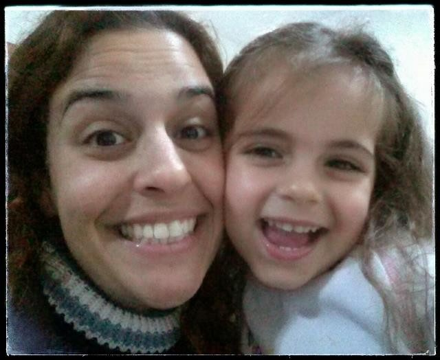

משחקי צלילים לפיתוח המודעות הפונולוגית ולהנאה עם היקירים שלנו

כשתמר, בתי הבכורה (3.5), אומרת לי: "אמא, יש לי רעיון! בואי נשחק את משחק הצלילים", ליבי מתמלא ואני יודעת שעשיתי משהו טוב..
למה הכוונה משחק הצלילים? ולמה אני עפה על עצמי, אתם שואלים..
הילדים שלנו נולדים ולאט לאט לומדים לדבר. בהתחלה, אנחנו מתלהבים מכל הברה שיוצאת מפיהם.. אחר כך, הם כבר לומדים לבקש ולומר מה רצונם, ובהמשך משתכללים אף יותר ומסגלים לעצמם כישורי מיקוח ומו"מ שלא היו מביישים עורכי דין ממולחים!
אחד הכישורים החשובים כבסיס לרכישת מיומנות הקריאה הוא פיתוח המודעות הפונולוגית - מודעות לפונמות, הצלילים הקטנים ביותר בשפה. כבר מגיל צעיר מומלץ לשחק עם הקטנטנים שלנו משחקי צלילים, בהם עושים מניפולציות על מילים בשפה. באופן זה, המודעות הפונולוגית שלהם מתפתחת ובעתיד (הלא רחוק), רכישת הקריאה תושפע מכך, ותהיה מהירה ומוצלחת.
אז.. בואו נשחק!
* אני חושבת על בעל-חיים/פרי/ירק/כלי תחבורה/צבע (שדה סמנטי כלשהו) שמתחיל בצליל ש' (לא שם האות, הצליל שלה) - על מה אני חושבת?
* הבאתי היום בתיק פרי שמתחיל בצליל ת' - מה הבאתי?
* צליל ראשון וצליל אחרון בשמות של בני המשפחה
* משחקים בחרוזים
ועוד ועוד ועוד..
מעבר לצלילים, אנחנו מאתגרים אותם לחשוב על 'חידות' ולשאול אותנו.. (כל אחד שואל בתורו), חושפים אותם לעוד שדות סמנטיים ומעשירים את אוצר המילים 'על הדרך'..
והכי חשוב - נהנים מזמן איכות עם הילדודס!
:)
סיון גומבוש - להצליח עם חיוך